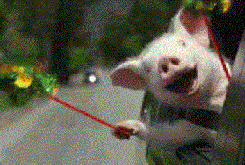

<!DOCTYPE html>
<html>
<head>
    <meta charset="utf-8">
    <meta name="viewport" content="initial-scale=1.0, maximum-scale=1.0, user-scalable=no" />
    <title></title>
     <link rel="stylesheet" type="text/css" href="css/index.css"/>
    <script type="text/javascript">
    	
   		document.addEventListener('plusready', function(){
   			//console.log("所有plus api都应该在此事件发生后调用，否则会出现plus is undefined。"
   			
   		});
   		
    </script>
</head>
<body>
	
	
	</body>
	<div id="one">
	3、很少说话的两个同事突然变得很亲热，你会觉得有“猫腻”吗？<br>
	<br>
	<input type="button" value="Yes" onclick="window.location.href = 'q5.html'">
	<input type="button" value="No" onclick="window.location.href = 'q8.html'">

	</div>
</html>